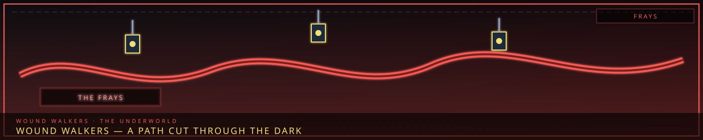

The Underworld & Wound Walkers
- Overview
- Company 4 — Year 4250+ (After All Companies)
- I. The Wound Walkers (상처 걷는 자 — Sanggeo Geonneun Ja)
- II. Sooah — The Protagonist
- III. Floor Realizations — The City's Wounds
- IV. The Wounds — Detailed
- V. The Ending — Eternal Healing
- VI. PM Elements Used
- VII. Timeline
- VIII. The Eternal Cycle
- The Underworld — Menders & Frays
“The Frays are not alleys. They are the city’s unhealed cuts, and people live in them.”

Company 4 — Year 4250+ (After All Companies)
"The city will always have wounds. And someone will always heal them. That is not a curse. That is a calling."
Overview
Year: 4250+ (after all other companies)
Setting: Somnarak — healed, but not whole. 45% hope. 55% sorrow.
Company: The Wound Walkers (상처 걷는 자 — Sanggeo Geonneun Ja)
Protagonist: Sooah (수아) — The Healer
Game Style: Library of The Great Collapse — Floor Realizations (character exploration through combat)
The Dawn Initiative achieved 45%. The Horizon Caravan connected two cities. The Memory Archive fulfilled the Promise.
But the city still has wounds. The Maw still whispers. The Scar still burns. The Old Lament still weeps. The debt system still crushes. The entities still suffer.
The Wound Walkers are born — a company that heals the city's wounds, one by one, forever. Not because the wounds can be healed completely. But because someone must try.
I. The Wound Walkers (상처 걷는 자 — Sanggeo Geonneun Ja)
What They Are
The Wound Walkers are healers — citizens who walk through the city's wounds, healing them, one by one. They are not heroes. They are not soldiers. They are healers — people who carry the weight of the city's sorrow, and choose to heal it.
Mission: Heal Somnarak's wounds — the Maw, the Scar, the Old Lament, the debt system, the entities' suffering. Not to cure them. To tend them. To make them bearable. To make them livable.
Philosophy: The city will always have wounds. Sorrow is Primordial — it cannot be erased. But wounds can be tended. Sorrow can be shared. Pain can be made bearable.
The Wound Walkers do not seek to end sorrow. The Wound Walkers seek to live with it.
II. Sooah — The Protagonist
Who She Is
Sooah is a healer — Zone D's doctor, the woman who treats everyone, the woman who lost her child to Han.
Origin: Sooah's child Fractured — years ago, before she became a healer. She could not save them. She heals others to make up for the one she could not save.
The Sorrow: Sooah carries the weight of loss — the grief of a mother who could not protect her child. She heals because she must. She heals because healing is the only thing that makes the weight bearable.
The Question: "If I heal everyone else, will I ever heal myself?"
The Journey
Sooah leads the Wound Walkers — walking through the city's wounds, healing them, one by one. She does not seek to cure the city. She seeks to tend it. To make the sorrow bearable. To make the grief livable.
The journey is eternal. The city will always have wounds. Sooah will always heal them. That is not a curse. That is a calling.
III. Floor Realizations — The City's Wounds
What They Are
Floor Realizations are character explorations — moments where the Walker confronts a wound, understands it, and tends it. Each Floor Realization is a battle — but not against an enemy. Against sorrow itself.
The Mechanic: Each Floor Realization is a wound — a place in the city where sorrow is concentrated. The Walker enters the wound, confronts the sorrow, and tends it. The wound does not disappear. The wound becomes bearable.
The Wounds
| Floor | Wound | Location | Sorrow | Realization |
|---|---|---|---|---|
| Floor 1 | The Maw | Zone B | The First Sorrow — 1,000 consumed | The Maw is not evil. The Maw is lonely. |
| Floor 2 | The Scar | The Desolate | The Occlusihan's rage | The Scar is not a wound. The Scar is a memorial. |
| Floor 3 | The Old Lament | Zone B | The city's oldest grief | The Old Lament is not dead. The Old Lament is mourning. |
| Floor 4 | The Debt System | Zone C | The weight of obligation | The debt is not a chain. The debt is a bond. |
| Floor 5 | The Entity Suffering | R.D. Facility | The entities' pain | The entities are not monsters. The entities are mirrors. |
| Floor 6 | The Cheongula | The Maw | The thousand's sacrifice | The Cheongula was not murder. The Cheongula was neglect. |
| Floor 7 | The Primordial Sorrow | The Weeping | The planet's grief | The sorrow is not a curse. The sorrow is a foundation. |
IV. The Wounds — Detailed
Floor 1: The Maw (Zone B)
The Wound: The First Sorrow — 1,000 citizens consumed by Han. The Maw whispers. The Maw hungers. The Maw grows.
The Realization: The Maw is not evil. The Maw is lonely. The thousand are not suffering. The thousand are waiting. Waiting for someone to listen. Waiting for someone to understand. Waiting for someone to say: "We remember."
The Healing: Sooah enters the Maw — alone, unarmed, unafraid. She sits in the Maw's center. She listens. She hears the thousand whispering — their names, their stories, their regrets. She weeps. She mourns. She remembers.
The Maw does not stop whispering. The Maw does not stop growing. But the Maw becomes... quieter. The whispers become softer. The hunger becomes less urgent.
The wound is not healed. The wound is tended.
Floor 2: The Scar (The Desolate)
The Wound: The Occlusihan's rage — six factions fighting, the Han erupting, the Scar forming.
The Realization: The Scar is not a wound. The Scar is a memorial. The rage is not destructive. The rage is protective. The Scar Walker guards the Scar — not to hurt, but to remember.
The Healing: Sooah enters the Scar — walking through the rift, feeling the rage, understanding the grief. She sits with the Scar Walker — the entity that guards the rift. She does not fight. She does not flee. She simply... sits.
The Scar Walker looks at her. The Scar Walker sees her sorrow. The Scar Walker salutes.
The Scar does not close. The rage does not fade. But the Scar becomes... quieter. The rage becomes less urgent.
The wound is not healed. The wound is tended.
Floor 3: The Old Lament (Zone B)
The Wound: The city's oldest grief — the sorrow of the first settlers, the weight of 6,000 years.
The Realization: The Old Lament is not dead. The Old Lament is mourning. The walls whisper because they remember. The ground hums because it feels. The buildings weep because they grieve.
The Healing: Sooah enters the Old Lament — walking through the streets, listening to the whispers, feeling the grief. She does not try to silence the whispers. She does not try to stop the weeping. She simply... listens.
The Old Lament does not stop whispering. The Old Lament does not stop weeping. But the Old Lament becomes... softer. The whispers become clearer. The weeping becomes less desperate.
The wound is not healed. The wound is tended.
Floor 4: The Debt System (Zone C)
The Wound: The weight of obligation — the debt that crushes, the Collectors that pursue, the citizens that suffer.
The Realization: The debt is not a chain. The debt is a bond. The debt connects citizens to the city — to each other, to the past, to the future. The debt is not evil. The debt is heavy.
The Healing: Sooah enters Collector's Row — walking through the streets, feeling the weight, understanding the burden. She sits with the Debt Widow (Chunhwa) — the woman who stands outside every day, holding her sign.
Sooah does not erase the debt. Sooah does not free the citizens. Sooah simply... shares the weight. She sits with Chunhwa. She holds her hand. She weeps with her.
The debt does not disappear. The Collectors do not stop. But the debt becomes... bearable. The weight becomes shared.
The wound is not healed. The wound is tended.
Floor 5: The Entity Suffering (R.D. Facility)
The Wound: The entities' pain — the sorrow of being contained, the grief of being studied, the weight of being used.
The Realization: The entities are not monsters. The entities are mirrors. They reflect the city's sorrow — the grief, the rage, the emptiness, the weight. The entities suffer because the city suffers.
The Healing: Sooah enters the R.D. facility — walking through the containment zones, visiting the entities, feeling their pain. She sits with the Smothering Mother. She listens to the Orphaned Bell. She holds the Silent Child.
The entities do not stop suffering. The containment does not end. But the entities become... calmer. The suffering becomes less acute.
The wound is not healed. The wound is tended.
Floor 6: The Cheongula (The Maw)
The Wound: The thousand's sacrifice — the citizens consumed by Han, the First Sorrow, the city's original sin.
The Realization: The Cheongula was not murder. The Cheongula was neglect. The thousand were not sacrificed. The thousand were forgotten. The city did not choose to consume them. The city chose not to save them.
The Healing: Sooah enters the Maw — again. But this time, she does not listen. She speaks. She tells the thousand the truth. She tells them about the Council's neglect. She tells them about the city's shame. She tells them that they were not sacrificed. They were abandoned.
The thousand whisper — not in sorrow, but in understanding. They know. They have always known. They are not angry. They are tired.
The Maw does not stop whispering. The Maw does not stop growing. But the Maw becomes... peaceful. The whispers become acceptance.
The wound is not healed. The wound is tended.
Floor 7: The Primordial Sorrow (The Weeping)
The Wound: The planet's grief — the sorrow of Mugenhan, the weight of 8.6 billion souls, the pain of existence.
The Realization: The sorrow is not a curse. The sorrow is a foundation. The planet grieves because the planet feels. The Han flows because the Han lives. The sorrow is not a disease. The sorrow is a symptom — of a planet that cares too much, that feels too deeply, that loves too hard.
The Healing: Sooah descends to the Weeping — alone, unarmed, unafraid. She sits in the river of liquid Han — feeling the planet's sorrow, understanding the planet's grief.
She does not try to stop the Weeping. She does not try to drain the Han. She simply... sits. She listens. She feels. She shares.
The Weeping does not stop flowing. The Han does not stop grieiving. But the Weeping becomes... warmer. The Han becomes less cold.
The wound is not healed. The wound is tended.
V. The Ending — Eternal Healing
Sooah finishes her journey. She has walked through the city's wounds. She has tended them. She has made them bearable.
But the wounds remain. The Maw still whispers. The Scar still burns. The Old Lament still weeps. The debt still crushes. The entities still suffer. The Cheongula still mourns. The planet still grieves.
The city is not healed. The city is tended.
And Sooah understands: the city will always have wounds. The sorrow is Primordial — it cannot be erased. The Han will always flow. The entities will always form. The grief will always exist.
But someone will always tend the wounds. Someone will always walk through the sorrow. Someone will always choose to heal — not because the wounds can be healed, but because healing is the only thing that makes the sorrow bearable.
The Wound Walkers are eternal. The city will always have wounds. And someone will always heal them.
Sooah: "The city will always have wounds. And someone will always heal them. That is not a curse. That is a calling."
VI. PM Elements Used
VII. Timeline
| Year | Event |
|---|---|
| 4232+1778 | Absolvohan activates (15%) |
| 4233 | Memory Archive — Seiyon's story |
| 4238 | Horizon Caravan — Kael's journey |
| 4238 | Dawn Initiative — Yeonhwa's mission |
| 4247 | Dawn achieves 45% |
| 4250+ | Wound Walkers — eternal healing begins |
VIII. The Eternal Cycle
The Wound Walkers are not a company. The Wound Walkers are a calling.
The city will always have wounds. The sorrow is Primordial. The Han will always flow. The entities will always form. The grief will always exist.
But someone will always tend the wounds. Someone will always walk through the sorrow. Someone will always choose to heal.
That is not a curse. That is a calling.
The Wound Walkers are eternal.
— Sooah, Wound Walker, Year 4250+
The Underworld — Menders & Frays
The Underworld — Menders & Frays
Full details: SOMNARAK_UNDERWORLD.md
Menders (수선자) — Independent Operators
Contractors who work in the Raw — fixing, containing, protecting where factions don't reach.
- Ranks: 7 (Novice) → 1 (Grandmaster)
- Marks: 5 legendary Menders (Grey Veil, Crimson Thread, Pale Witness, Black Tide, Golden Echo)
- Organizations: The Mendery, Raw Collective, Threshold Walkers, Veil Watchers
The Frays (올 — Ol) — Criminal Underworld
The loose, chaotic threads of Somnarak — operating in the lawless lower wards.
| # | Fray | Specialty |
|---|---|---|
| 1 | The Harvesters | Illegal Echo extraction |
| 2 | The Debt Brokers | Debt trading |
| 3 | The Veil Merchants | Counterfeit Veil access |
| 4 | The Memory Washers | Memory washing |
| 5 | The Entity Traders | Sorrow Entity trafficking |